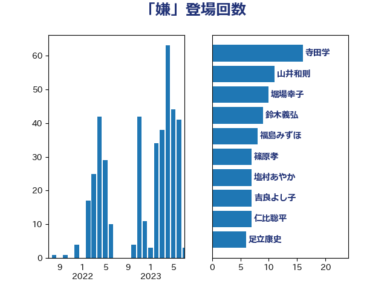

単語「嫌」

| 寺田学 | 立憲民主党 | 16 回 |
| 山井和則 | 立憲民主党 | 11 回 |
| 堀場幸子 | 日本維新の会 | 10 回 |
| 鈴木義弘 | 国民民主党 | 9 回 |
| 福島みずほ | 社会民主党 | 8 回 |
| 篠原孝 | 立憲民主党 | 7 回 |
| 塩村あやか | 立憲民主党 | 7 回 |
| 吉良よし子 | 日本共産党 | 7 回 |
| 仁比聡平 | 日本共産党 | 7 回 |
| 足立康史 | 日本維新の会 | 6 回 |
| 福山哲郎 | 立憲民主党 | 6 回 |
| 小沼巧 | 立憲民主党 | 6 回 |
| 野田聖子 | 自由民主党 | 5 回 |
| 米山隆一 | 立憲民主党 | 5 回 |
| 石川大我 | 立憲民主党 | 5 回 |
| 佐々木さやか | 公明党 | 5 回 |
| 上田清司 | 国民民主党 | 5 回 |
| 福島伸享 | 無所属 | 4 回 |
| 岡本あき子 | 立憲民主党 | 4 回 |
| 山本剛正 | 日本維新の会 | 4 回 |
| 奥野総一郎 | 立憲民主党 | 4 回 |
| 大石あきこ | れいわ新選組 | 4 回 |
| 仁木博文 | 無所属 | 4 回 |
| 長妻昭 | 立憲民主党 | 3 回 |
| 鎌田さゆり | 立憲民主党 | 3 回 |
| 西村智奈美 | 立憲民主党 | 3 回 |
| 藤岡隆雄 | 立憲民主党 | 3 回 |
| 神谷宗幣 | 参政党 | 3 回 |
| 石井苗子 | 日本維新の会 | 3 回 |
| 浜田聡 | NHK党 | 3 回 |
| 河野太郎 | 自由民主党 | 3 回 |
| 櫻井周 | 立憲民主党 | 3 回 |
| 梅村みずほ | 日本維新の会 | 3 回 |
| 山下貴司 | 自由民主党 | 3 回 |
| 宮本岳志 | 日本共産党 | 3 回 |
| 天畠大輔 | れいわ新選組 | 3 回 |
| 吉田統彦 | 立憲民主党 | 3 回 |
| 伊藤孝恵 | 国民民主党 | 3 回 |
| 齋藤健 | 自由民主党 | 2 回 |
| 高木真理 | 立憲民主党 | 2 回 |
| 馬場雄基 | 立憲民主党 | 2 回 |
| 青島健太 | 日本維新の会 | 2 回 |
| 阿部司 | 日本維新の会 | 2 回 |
| 道下大樹 | 立憲民主党 | 2 回 |
| 萩生田光一 | 自由民主党 | 2 回 |
| 荒井優 | 立憲民主党 | 2 回 |
| 緒方林太郎 | 無所属 | 2 回 |
| 穀田恵二 | 日本共産党 | 2 回 |
| 田嶋要 | 立憲民主党 | 2 回 |
| 田名部匡代 | 立憲民主党 | 2 回 |
| 湯原俊二 | 立憲民主党 | 2 回 |
| 江藤拓 | 自由民主党 | 2 回 |
| 永岡桂子 | 自由民主党 | 2 回 |
| 櫛渕万里 | れいわ新選組 | 2 回 |
| 森田俊和 | 立憲民主党 | 2 回 |
| 梅村聡 | 日本維新の会 | 2 回 |
| 松沢成文 | 日本維新の会 | 2 回 |
| 末松義規 | 立憲民主党 | 2 回 |
| 斎藤アレックス | 国民民主党 | 2 回 |
| 岸田文雄 | 自由民主党 | 2 回 |
| 山田太郎 | 自由民主党 | 2 回 |
| 小池晃 | 日本共産党 | 2 回 |
| 小川淳也 | 立憲民主党 | 2 回 |
| 寺田静 | 無所属 | 2 回 |
| 守島正 | 日本維新の会 | 2 回 |
| 堤かなめ | 立憲民主党 | 2 回 |
| 前川清成 | 日本維新の会 | 2 回 |
| 前原誠司 | 国民民主党 | 2 回 |
| たがや亮 | れいわ新選組 | 2 回 |
| 高橋千鶴子 | 日本共産党 | 1 回 |
| 高木陽介 | 公明党 | 1 回 |
| 高木かおり | 日本維新の会 | 1 回 |
| 須藤元気 | 無所属 | 1 回 |
| 青山繁晴 | 自由民主党 | 1 回 |
| 青山大人 | 立憲民主党 | 1 回 |
| 阿部知子 | 立憲民主党 | 1 回 |
| 阿部弘樹 | 日本維新の会 | 1 回 |
| 鈴木敦 | 国民民主党 | 1 回 |
| 近藤和也 | 立憲民主党 | 1 回 |
| 谷公一 | 自由民主党 | 1 回 |
| 西村康稔 | 自由民主党 | 1 回 |
| 西岡秀子 | 国民民主党 | 1 回 |
| 藤巻健太 | 日本維新の会 | 1 回 |
| 芳賀道也 | 国民民主党 | 1 回 |
| 羽田次郎 | 立憲民主党 | 1 回 |
| 簗和生 | 自由民主党 | 1 回 |
| 秋本真利 | 無所属 | 1 回 |
| 石橋通宏 | 立憲民主党 | 1 回 |
| 石垣のりこ | 立憲民主党 | 1 回 |
| 石井章 | 日本維新の会 | 1 回 |
| 田村智子 | 日本共産党 | 1 回 |
| 漆間譲司 | 日本維新の会 | 1 回 |
| 清水貴之 | 日本維新の会 | 1 回 |
| 沢田良 | 日本維新の会 | 1 回 |
| 森本真治 | 立憲民主党 | 1 回 |
| 森山浩行 | 立憲民主党 | 1 回 |
| 森屋隆 | 立憲民主党 | 1 回 |
| 柴愼一 | 立憲民主党 | 1 回 |
| 柳ヶ瀬裕文 | 日本維新の会 | 1 回 |
| 柚木道義 | 立憲民主党 | 1 回 |
| 松野明美 | 日本維新の会 | 1 回 |
| 松川るい | 自由民主党 | 1 回 |
| 杉本和巳 | 日本維新の会 | 1 回 |
| 木村英子 | れいわ新選組 | 1 回 |
| 打越さく良 | 立憲民主党 | 1 回 |
| 平木大作 | 公明党 | 1 回 |
| 市村浩一郎 | 日本維新の会 | 1 回 |
| 川合孝典 | 国民民主党 | 1 回 |
| 岸真紀子 | 立憲民主党 | 1 回 |
| 山本香苗 | 公明党 | 1 回 |
| 山本有二 | 自由民主党 | 1 回 |
| 山岸一生 | 立憲民主党 | 1 回 |
| 小野田紀美 | 自由民主党 | 1 回 |
| 小田原潔 | 自由民主党 | 1 回 |
| 小熊慎司 | 立憲民主党 | 1 回 |
| 小渕優子 | 自由民主党 | 1 回 |
| 小寺裕雄 | 自由民主党 | 1 回 |
| 宮澤博行 | 自由民主党 | 1 回 |
| 宮下一郎 | 自由民主党 | 1 回 |
| 安江伸夫 | 公明党 | 1 回 |
| 塩川鉄也 | 日本共産党 | 1 回 |
| 嘉田由紀子 | 無所属 | 1 回 |
| 吉田とも代 | 日本維新の会 | 1 回 |
| 務台俊介 | 自由民主党 | 1 回 |
| 加藤勝信 | 自由民主党 | 1 回 |
| 倉林明子 | 日本共産党 | 1 回 |
| 佐藤公治 | 立憲民主党 | 1 回 |
| 伴野豊 | 立憲民主党 | 1 回 |
| 伊藤岳 | 日本共産党 | 1 回 |
| 伊藤孝江 | 公明党 | 1 回 |
| 伊藤俊輔 | 立憲民主党 | 1 回 |
| 中谷一馬 | 立憲民主党 | 1 回 |
| 中司宏 | 日本維新の会 | 1 回 |
| 世耕弘成 | 自由民主党 | 1 回 |
| 三木圭恵 | 日本維新の会 | 1 回 |
| 三宅伸吾 | 自由民主党 | 1 回 |